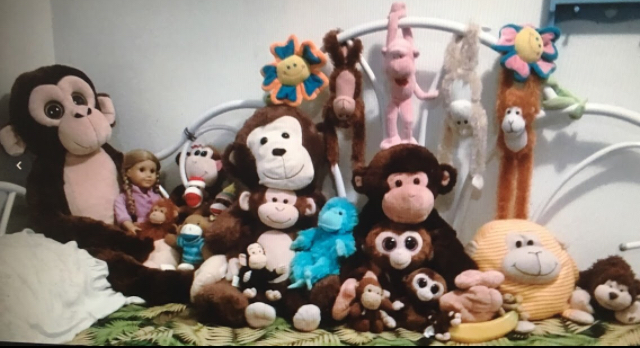

Family
I have the most incredible family. I am the second oldest of 5. I have 3 sisters and 1 brother. It is a party every day. The 3 oldest have moved out of the house, so it is even more exciting when we are all able to get togehter agian.
Growing up, we loved playing Hide and Seek, baking cookies, dancing, watiching PBS Kids and playing on playgrounds.
Now that we are a little bit older, we like going on adventures, going on photo shoots, watching Rom Coms and talking and laughing at all hours of the day and night.
 Here is a picture of my dad, siblings, and I on the snow horse we built.
Here is a picture of my dad, siblings, and I on the snow horse we built.
I am excited for all of the fun memories I will be able to make with my family in the future. My siblings and I are already planning how we are each going to be the favorite aunt and have cousin sleep overs all the time. It is a party waiting to happen.
More About Me
I would consider myself an interesting person. I can be indecisive at times, but when I know what I want to do, there is no stoping me.
I look up to my parents. They are my role models. They are service minded and kind. They use their hands and work hard, and play even harder. They teach us the importance of family time and working together. They strive to do their best in everything that they do. I wouldn't be here without them.
To follow their example, I decided to go to college. I choose to go to Snow College and earn my Associates like my Mom did and then go to BYU and follow in my Dad's footsteps.
Fun Facts
I enjoy collecting things. My largest colection so far is of stuffed monkeys.
 Here they are, all lined up on my bed.● I love icecream and warm applesauce.
● I dislike chocolate.
● I love kale and eggs, and eggs on hamburgers.
● I also love to dance and play music. I play violin and piano. and I am learning the mandolin, and ukulele.
● I also really enjoy mopping floors. The bigger the floor, the more fun it is.
I also love my dog. Her name is Daisy, and she is a good dog. She loves balls and sleeping in the sun. She also loves the piano, and will sit by the paino whenever it is being played.
 Me and my cute dog.
Me and my cute dog.